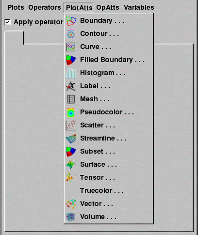

When you add a plot to the plot list, it won't be drawn until you click the Draw button. Once you do, the new plot's plot list entry switches from green to yellow in the Plot list to indicate that its results are pending and the compute engine starts generating the plot. Clicking the Draw button causes all new plots to be drawn.
|  |
| Figure 3 |